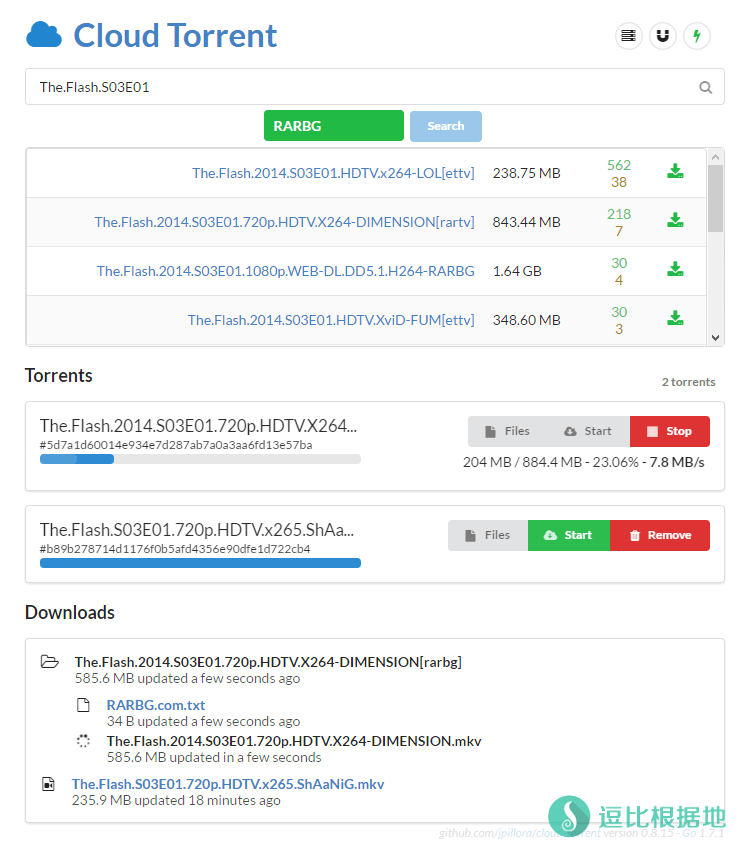
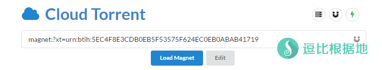
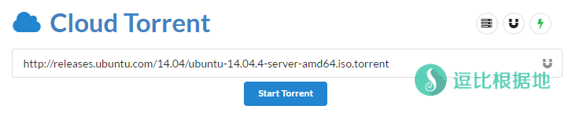
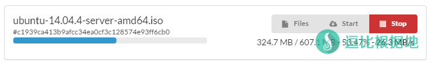
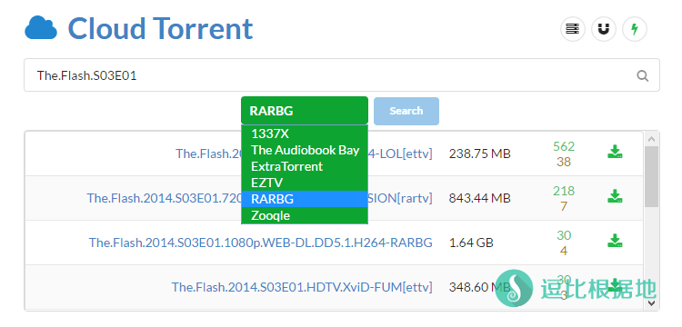
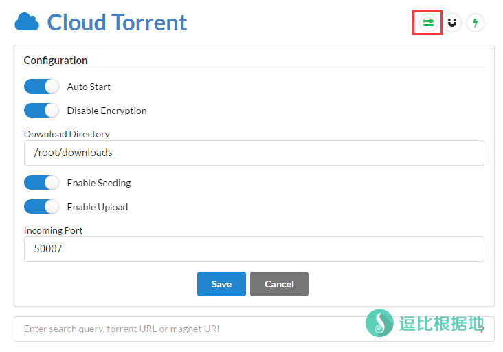
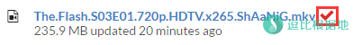
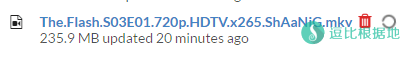
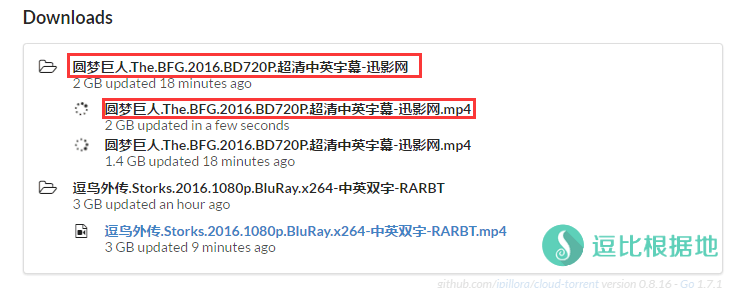

最近意外发现了一个 老司机神器，可以离线下载 BT和磁力链接 的Cloud Torrent，并且网上搜了搜没见到写这个教程的。
就研究了一下，感觉挺不错的就赶紧写教程给各位老司机！嘀嘀嘀~
Cloud Torrent v0.8.25 版本已支持上传本地BT种子功能，顶部输入框尾部有个上传按钮。
Cloud Torrent还支持 Windows 64位使用教程：支持 BT、磁力链接、边下边播的老司机坐骑 —— Cloud Torrent Windows安装教程

声明：本文章仅提供 BT/磁力链接 下载工具的安装方法和说明，任何使用此工具 下载版权侵权文件或导致任何经济损失，皆和本人无任何关系！如果你不同意或有异议，请关闭这个网页！
原本安装步骤就非常简单，但是我又想要更简单一些，所以写了一个脚本来简单操作，临时写的可能会有一些BUG，记得留言反馈。
系统需求
CentOS / Debian / Ubuntu 都可以，因为是 Go语言写的。
不过，本人测试系统为 Debian 7 x64 建议使用这个。
脚本版本：
Ver: 1.2.5
2017/11/14脚本更新后，升级脚本请先通过旧脚本卸载 Cloud Torrent，然后再下载新脚本继续安装！
Cloud Torrent特点
- 支持 BT下载
- 支持 磁力链接下载
- 支持 搜索磁力链接
- 支持 离线下载
- 支持 上传本地BT种子
- 支持 边下边播( 格式限制：mp4/wbem/ogg)
- 可视化界面 Web UI
安装步骤
wget -N --no-check-certificate https://raw.githubusercontent.com/ToyoDAdoubiBackup/doubi/master/cloudt.sh && chmod +x cloudt.sh && bash cloudt.sh
下载运行完毕脚本，会出现脚本菜单，选择并输入 1，就会直接开始安装 Cloud Torrent。
安装完成之后，就会提醒你，输入要开放的端口（默认 8000）可选：用户名（默认 user）和密码（默认 doub.io）。
点击展开 查看更多
# 域名为示例域名，请不要照者写。
请输入 Cloud Torrent 监听域名或IP（当你要绑定域名前，记得先做好域名解析，目前只支持http://访问，不要写http://，只写域名！）
(默认回车自动获取外网IP绑定):toyoo.pw
========================
端口 : toyoo.pw
========================
请输入 Cloud Torrent 监听端口 [1-65535]（如果是绑定的域名，那么建议80端口）
(默认端口: 80):
========================
端口 : 80
========================
是否设置 用户名和密码 ? [y/N] :Y
请输入用户名
(默认用户名: user):
========================
用户名 : user
========================
请输入用户名的密码
(默认密码: 随机生成10位数字+字母):
========================
密码 : 9486eb1fb1
========================
————————————————
你的 Cloud Torrent 信息 :
地址 : http://toyoo.pw
用户 : user
密码 : 9486eb1fb1
————————————————
启动后，访问 http://toyoo.pw 即可看到Web UI界面了。
使用说明
脚本使用说明
bash cloudt.sh
然后就会看到菜单，输入对应选项的数字即可。
请输入一个数字来选择选项
1. 安装 Cloud Torrent
2. 升级 Cloud Torrent
3. 卸载 Cloud Torrent
————————————
4. 启动 Cloud Torrent
5. 停止 Cloud Torrent
6. 重启 Cloud Torrent
————————————
7. 设置 Cloud Torrent 账号
8. 查看 Cloud Torrent 账号
9. 查看 Cloud Torrent 日志
————————————
当前状态: 已安装 并 已启动
同时脚本设置了 系统服务，所以可以这样控制：
启动：/etc/init.d/cloudt start
停止：/etc/init.d/cloudt stop
重启：/etc/init.d/cloudt restart
查看状态：/etc/init.d/cloudt status
并且支持开机启动了。
Cloud Torrent使用说明
点击展开 查看更多
BT 和 磁力链接
Cloud Torrent可以直接在输入中输入 磁力链接 或者 在线的BT种子（不支持本地上传），点击下面的 蓝色的按钮，就会开始解析资源。


按钮说明
成功解析后，就会显示如下的界面，开始下载。
Files 是查看正在下载的文件列表， Start 是启动下载（默认解析后直接启动下载）， Stop 是停止下载。
还有，如果你下载完毕或者点了 Stop 停止下载，那么 Stop 就会变成 Remove 删除任务的按钮了。

搜索磁力链接
Cloud Torrent支持搜索磁力链接，在输入栏中直接输入你要搜索的文件名称，同时点击 绿色的按钮 选择一个搜索源，然后点击 蓝色的Search 按钮就可以搜索了。
注意：Cloud Torrent是国外人写的，所以这些搜索源均是国外的磁力链接网站，搜索到的资源基本没有中文的，所以非特殊需求的这个功能就没什么卵用了。

设置Cloud Torrent
点击右上角的第一个按钮，就会出现下面这个界面。
功能依次是：
- 自动启动
- 禁用加密
- 下载目录
- 启用种子
- 启用上传
- 输入端口
这里的配置存在：/usr/local/cloudtorrent/cloud-torrent.json

删除文件
如果你想要删除刚才下载的文件，那么你可以点击你 下载的文件的名称 右边的垃圾箱图标，点击之后会变成一个 对号 图标，代表确认按钮，所以再点击一下就会出现转圈圈删除了。



下载/在线播放
当BT中的某个文件下载完毕之后，文件名 就会变成可以点击的蓝色，点击后就会开始下载。
如果是 MP4 Webm Ogg 这三个格式的视频，那只要浏览器支持HTML5视频 就能在线播放，其他的格式需要额外的解码器，所以浏览器无法直接播放。
边下边播
这个软件其实也可以边下载边播放的，只是软件的机制是：只有当BT中的某个文件下载完成后，才会显示下载连接，所以文件正在下载的时候，显示文件名是无法点击的，但是不代表链接不存在，所以你可以手动拼接链接，这样就能实现边下边播了！下面是示例。
比如：你的网站是 1.1.1.1:8000 ，你下载的是下图中的 mp4 视频，那么你访问
http://1.1.1.1:8000/download/文件夹（一定要注意这个，不要忽略了文件夹！！！！）/文件名.mp4
http://1.1.1.1:8000/download/圆梦巨人.The.BFG.2016.BD720P.超清中英字幕-迅影网/圆梦巨人.The.BFG.2016.BD720P.超清中英字幕-迅影网.mp4
下载的BT文件都是在 download 文件夹下面新建立一个单独的文件夹，里面包含了下载的文件。
所以即使是在下载中，你也可以直接播放，当然，最好BT下载一部分再开始观看，否则可能不流畅。

文件位置
安装目录：/usr/local/cloudtorrent
下载目录：/usr/local/cloudtorrent/downloads
配置文件：/usr/local/cloudtorrent/cloud-torrent.json
配置文件：/usr/local/cloudtorrent/cloud-torrent.conf (这个为脚本所用的配置文件)
日志文件：/tmp/ct.log (日志存放在系统临时文件夹，重启VPS后自动清理)
注意事项
BT和磁力链接的速度是和， 磁力链接/BT 的用户上传共享量 和 中心服务器的宽带质量，以及你下载 磁力链接/BT 的VPS的宽带有关系。
这种软件在某些程度上比不上 国内的迅雷，毕竟迅雷 用户了很大共享了很多的上传速度，而且还有缓存的中心服务器，所以才会那么快。
Cloud Torrent还支持 Windows 64位使用教程：支持 BT、磁力链接、边下边播的老司机坐骑 —— Cloud Torrent Windows安装教程
如果你是国外的VPS，特别是美国的，一定要注意下载 BT/磁力链接 容易遇到蜜罐，然后被投诉封VPS。建议使用欧洲的罗马尼亚，那里的VPS无视版权，当然拉回本地，速度肯定也不会多快。
绑定域名访问，启动失败，日志提示：listen tcp: lookup XXX.XXX(域名) on xxx.xxx.xxx.xxx(当前服务器DNS):53: no such host
点击展开 查看更多
当你想要绑定域名访问 Cloud Torrent 的时候，发现 Cloud Torrent 启动失败了，查看日志后发现提示：
listen tcp: lookup XXX.XXX(域名) on xxx.xxx.xxx.xxx(当前服务器DNS):53: no such host
这样的内容，那么就是你没有做域名的DNS解析（绑定的域名没有解析到当前服务器IP），或者是做好解析后 当前服务器的DNS还没反应过来。
这时候，如果你没有做域名DNS解析，那就去做，做完后等待域名解析生效（主要是等待当前服务器的DNS解析生效），或者做一下hosts来减少等待时间。
如果你做了域名DNS解析了，那说明当前服务器的DNS还没反应过来，你可以 ping 域名 看一下，是不是提示 ping: unknown host 域名 ，提示这个说明当前服务器的DNS还没有解析生效，慢慢等，或者做一下hosts来减少等待时间。
Hosts添加方法：
echo -e "\n当前服务器的IP 你绑定的域名\n" >> /etc/hosts
# 示例：
echo -e "\n1.1.1.1 233.com\n" >> /etc/hosts
启动失败，日志提示：listen tcp IP:端口: bind: address already in use
这种情况是你绑定的网页访问端口被其他程序占用，你需要去关闭占用的程序，或者修改绑定的端口。
点击展开 查看更多
查看占用程序：
netstat -lntp
找到 0.0.0.0:你绑定的端口 这一行，看后面的程序名字，例如是 80 端口，然后被 nginx 占用了，那么这样关闭：
/etc/init.d/nginx stop
# 并且取消开机启动，避免与 Cloud Torrent 开机启动冲突。
update-rc.d -f nginx remove
如果你用上面的方式替换 nginx 发现无法停止，那么就直接终止进程，先看到进程的PID，也就是 xxx/nginx 这一列前面的 xxx 这个数字，然后输入命令：
kill -9 PID进程数字
然后再去尝试启动Cloud Torrent。
无法访问你的 http://IP或域名:端口
可能是防火墙规则的问题，脚本已经默认设置了内部防火墙开放了端口规则，而部分VPS可能有外部防火墙，例如：阿里云、腾讯云、微软云、谷歌云、亚马逊云等，你需要去他们的后台找到 安全组/规则组 一类的选择去开放端口（分别是你的访问网页端口，例如 80，和BT下载端口 50007）
提示wget: unknown host "softs.wtf" 之类的错误
这是无法解析我的域名，多半是DNS的问题，请更换DNS为谷歌DNS。
点击展开 查看更多
echo -e "nameserver 8.8.8.8\nnameserver 8.8.4.4" > /etc/resolv.conf
提示 wget: command not found 的错误
这是你的系统精简的太干净了，wget都没有安装，所以需要安装wget。
点击展开 查看更多
CentOS系统:
yum install -y wget
Debian/Ubuntu系统:
apt-get install -y wget
关于Cloud Torrent 右上角第二个的那个磁力图标，我也不清楚是干嘛的好像是编辑磁力链接的，懂得可以跟我说一下。
更新日志
2018年10月06日，版本 v1.2.5
1. 新增 密码默认值从固定的 doub.io 改为 随机生成10位数字+字母组合。
—— 免得一些人用默认密码被别人猜到。
2018年10月06日，版本 v1.2.4
1. 新增 支持 ARM 构架。
点击展开 查看更多更新日志
2018年07月10日，版本 v1.2.3
1. 新增 升级脚本时，将一起升级服务脚本（Service）。
2017年11月18日，Ver 1.2.2
1. 优化 配置文件格式，修复读取可能显示的BUG。
2. 修复 一些错误文字。
此版本更新涉及到 配置文件格式，所以请重装 Cloud Torrent 程序本身及脚本，否则可能会出错。
2017年11月17日，Ver 1.2.1
1. 修复 选项 8. 查看 Cloud Torrent 账号 显示地址错误的问题。
2. 优化 配置文件读取代码。
3. 优化 在安装/修改 Cloud Torrent 配置内容中的IP/域名时 由 默认回车自动获取外网IP 改成 默认回车 0.0.0.0
—— 0.0.0.0 是代表监听当前服务器上面所有网卡和所有IP，避免了以前检测外网IP可能会无法访问的问题（一些网卡绑定内网IP的服务器启动Cloud Torrent会提示绑定失败）。
此版本更新，请重装 Cloud Torrent 程序本身及脚本，否则可能会出错。
2017年11月14日，Ver 1.2.0
1. 添加 支持自定义域名或IP绑定（域名只支持 http:// 方式访问，IP绑定是提供给服务器有多个IP的情况使用）
2. 修改 Cloud Torrent安装目录为 /usr/local/cloudtorrent ，这样看起来合理点。
2017年04月05日，Ver 1.1.3
1.修复 菜单选项 8 查看账号不显示端口的问题。
2.修复 系统服务脚本 查看Cloud Torrent状态，不显示端口的问题。
2017年04月02日，Ver 1.1.2
1.新增 支持32位 i686 系统安装使用
2017年04月01日，Ver 1.1.1
1.修复 因系统根证书不完整，导致不信任 Github SSL证书，因而无法正常下载的问题。
2017年04月01日，Ver 1.1.0
1.新增 服务管理脚本。
2.新增 开机启动支持。
3.重新 脚本。
2017年01月20日，Ver 1.0.5
1.新增 启动Cloud Torrent自动开放防火墙端口。
2017年01月2日，Ver 1.0.4
1.新增 安装Cloud Torrent时候可以手动输入版本号功能。
—— 一些VPS自动获取最新版本号会出现获取失败的问题，再加上一些人可能觉得新版本不好用，所以增加了一个手动输入版本号的功能。
版本号从这里获取：Github，格式是 x.x.xx 。
2016年12月13日，Ver 1.0.3
1.新增 Cloud Torrent 检测版本功能。
—— 在启动Cloud Torrent时，会自动检测最新版本，如果发现新版本就会提示升级。
2.修复 Cloud Torrent 偶尔遇到下载失败的问题。
—— 不再使用作者提供的API了，直接自己判断来下载文件，免得Github限速API 导致偶尔出现下载失败的情况。
这个版本之后，基本上功能都完善了，也没有明显的BUG了。自动检测升级功能也加上了，脚本也没什么好更新的功能了。
2016年12月05日，Ver 1.0.2
1.新增 脚本自动判断功能。
—— 不需要输入 bash cloudt.sh install/start/stop 后面参数了，直接输入 bash cloudt.sh 就会自动判断，如果没有安装就自动安装，如果没有启动会自动启动，如果正在运行，会提示是否停止。
2.修复 启动/停止成功，但是提示启动/停止失败的BUG。
2016年11月29日，Ver 1.0.1
1.新增 判断系统功能。
2.新增 修改DNS为谷歌DNS。
3.新增 可选是否设置用户名和密码的选项。
4.修复 部分BUG。
2016年11月29日，Ver 1.0.0
1.推出 正式版 1.0.0 。
如果发现BUG请在下面留言，如果需要什么新功能，记得也留言联系我。
其他的支持离线下载 BT和磁力链接的教程：https://doub.io/all-one/#BT、磁力链接下载 相关教程
GitHub项目地址（感谢作者）：https://github.com/jpillora/cloud-torrent
转载请超链接注明：逗比根据地 » 『原创』支持 BT(磁力链接)、离线下载和边下边播的老司机坐骑 —— Cloud Torrent 一键脚本
责任声明：本站一切资源仅用作交流学习，请勿用作商业或违法行为！如造成任何后果，本站概不负责！


服务器上面执行 uname -m 看看输出什么。
另外我更新了下脚本，支持了 ARM 构架，你重装软件试试。
推荐使用BT文件，这个程序用磁力链接实在玄学。
磁力链接较容易出现这种问题，你换成种子链接试试：http://111.73.45.199:8090/b1/%E7%8B%82%E6%9A%B4%E5%B7%A8%E5%85%BD.Rampage.2018.1080p.WEB-DL.DD5.1.H264-%E4%B8%AD%E8%8B%B1%E5%8F%8C%E5%AD%97-RARBT.torrent
一、BT下载大都是盗版资源，容易被版权公司投诉，然后IDC收到投诉后就会封你服务器。
二、BT下载就是P2P协议，P2P协议如果不做限制，可能会占用大量服务器网络资源（上传和下载，网络滥用）。
只要不违反这两点，一般无大碍。
要么Cloud Torrent用其他端口，要么Cloud Torrent设置非80 443端口（如2333），然后让 nginx 等HTTP服务转发到 127.0.0.1:2333 ，我只提供思路具体自行谷歌。
第一种方法自行搜索，很简单的。第二种方法可以参考这个教程：Linux开放HTTP服务并下载文件到本地 以测试 VPS回程速度，把网站目录改成你要取回本地的文件所在文件夹，然后打开网页下载就行了（注意是参考这个教程而不是完全执行，比如 测速文件步骤就跳过）。
chmod +x cloud-torrent代码来赋予运行权限，你手动执行以下，可能需要 ROOT权限，其他的 CentOS7 我不用不了解。cat /tmp/ct.log下载完播放（是BT下载一般你下载下来还是BT下载完毕你下载下来？BT内容自身是否正常？）反正我测试的在线播放，声音是正常的，不排除是你BT问题或者BT内容未完 下载软件下载的问题。